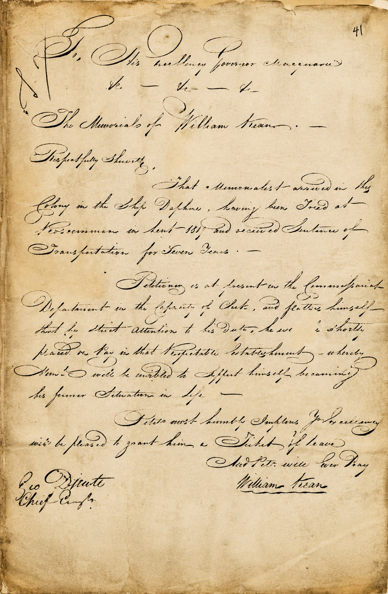
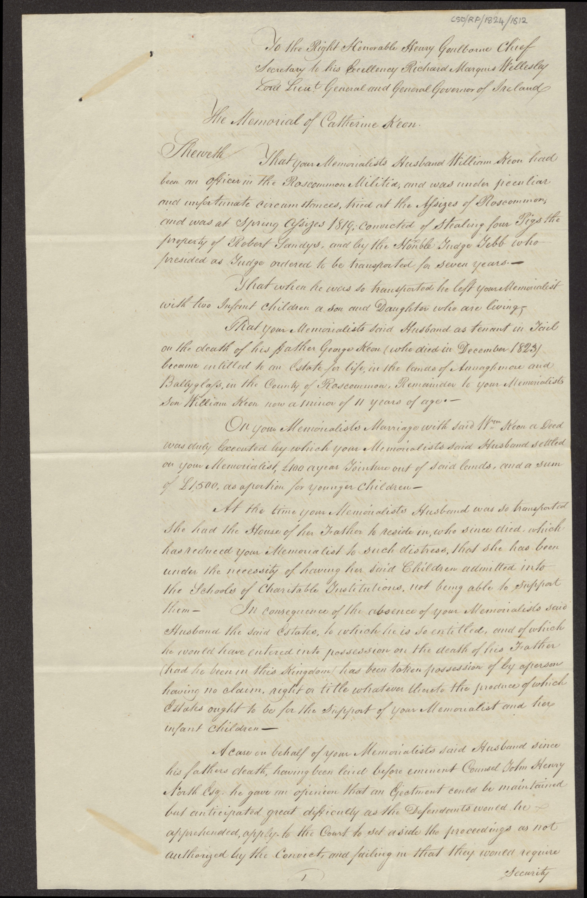
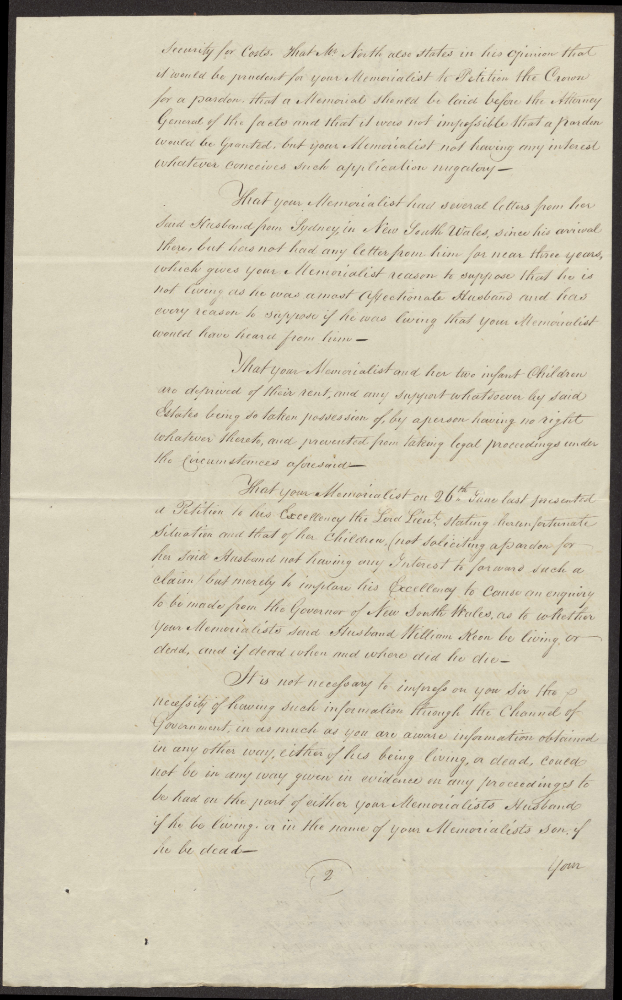
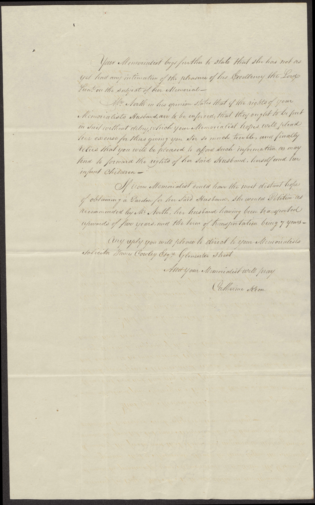

The Forgotten Histories · Book Two
The Original Documents
Letters, petitions and official correspondence survive from the events behind The Theft of Truth. Here are some of the records that inspired the novel, presented for readers who wish to explore the evidence themselves.
William Kean's Petition, 1820
A petition requesting a Ticket of Leave, bearing the signatures of William Kean and George Druitt.

Museums of History NSW – State Archives Collection. MHNSW-StAC: NRS-900 [4/1861] p. 41, William Kean per Daphne, 01/01/1820.
Catherine Keon's Memorial, 1824
Catherine Keon's appeal concerning her transported husband and the circumstances facing her family.






National Archives of Ireland, CS/ORP/1824/1612. Reproduced by kind permission of the Director of the National Archives.
Correspondence from 1827
Letters concerning enquiries made about William Kean in New South Wales, including an account relayed through Colonel Murray.
Museums of History NSW – State Archives Collection. MHNSW-StAC: NRS-905 [4/1959], Letter no. 27/11936.
The Newcastle Burial Enquiry, 1827
Official correspondence referring to a burial entry dated 2 January 1823, recording William Kean's age as 45.
Museums of History NSW – State Archives Collection. MHNSW-StAC: NRS-905 [4/1959], Letter no. 27/11936.